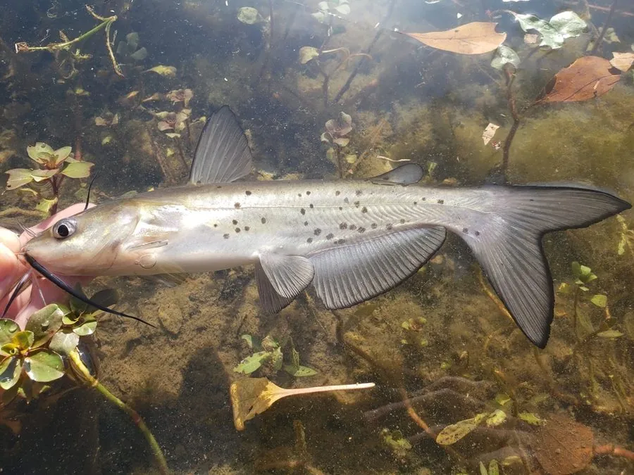

鱼类 · 动物界
斑点叉尾鮰 Ictalurus punctatus

原产北美的鲶鱼，体表散布黑色斑点，肉质细嫩且无肌间刺，被引入中国后成为重要的淡水养殖鱼类之一。
- 分类
- 门脊索动物门纲硬骨鱼纲目鲇形目科北美鲶科属鮰属
- 栖息环境
- 河流、湖泊和水库的底层，喜沙泥底质和有洞穴的环境
- 地理分布
- 原产北美密西西比河流域及美国东部，中国于 1984 年引入养殖
- 保护级别
- 暂无评估；中国未列入国家重点保护野生动物名录（重要养殖鱼类）
物种志
斑点叉尾鮰体呈长圆形，头部扁平，口亚端位，口周有 4 对须。体表无鳞，体色灰蓝或灰黑，腹部银白，体侧散布着不规则的小黑斑，这是它最显眼的特征。成鱼体长一般 30–60 cm，体重 0.5–3 kg，最大可超过 1 m、体重 20 kg 以上。
斑点叉尾鮰原产北美的密西西比河流域及美国东部，是当地重要的养殖和游钓鱼类。它是底栖杂食偏肉食性鱼类，吃小鱼、虾类、水生昆虫、软体动物和植物碎屑。繁殖期在 4–6 月，雄鱼在洞穴或巢穴中守护鱼卵，并扇动鳍为卵提供氧气。1984 年它被引入中国，因生长快、肉质好、适应性强而迅速推广，如今是重要的淡水养殖品种，在部分水域也形成了逃逸种群。斑点叉尾鮰肉质细嫩、没有肌间刺，适合加工成鱼片，是欧美市场上常见的淡水鱼产品。目前它没有IUCN 的正式评估，中国未将其列入国家重点保护野生动物名录。
形态与习性
- 食性杂食偏肉食，吃小鱼、虾类、水生昆虫、软体动物和植物碎屑
- 体长一般 30–60 cm，最大可超过 1 m
- 体重常见 0.5–3 kg，最大可超过 20 kg
- 繁殖4–6 月产卵，雄鱼在洞穴中护卵并扇水供氧
- 引入历史1984 年从北美引入中国，现为重要养殖鱼类
- 外观体表无鳞，体侧散布不规则的小黑斑
趣味知识
- 斑点叉尾鮰体侧的黑色斑点像撒上去的芝麻，是它最显眼的特征。
- 它原产北美，1984 年被引入中国，如今已是重要的养殖鱼类。
- 雄鱼会在巢穴中守护鱼卵，还会扇动鳍为卵提供氧气。